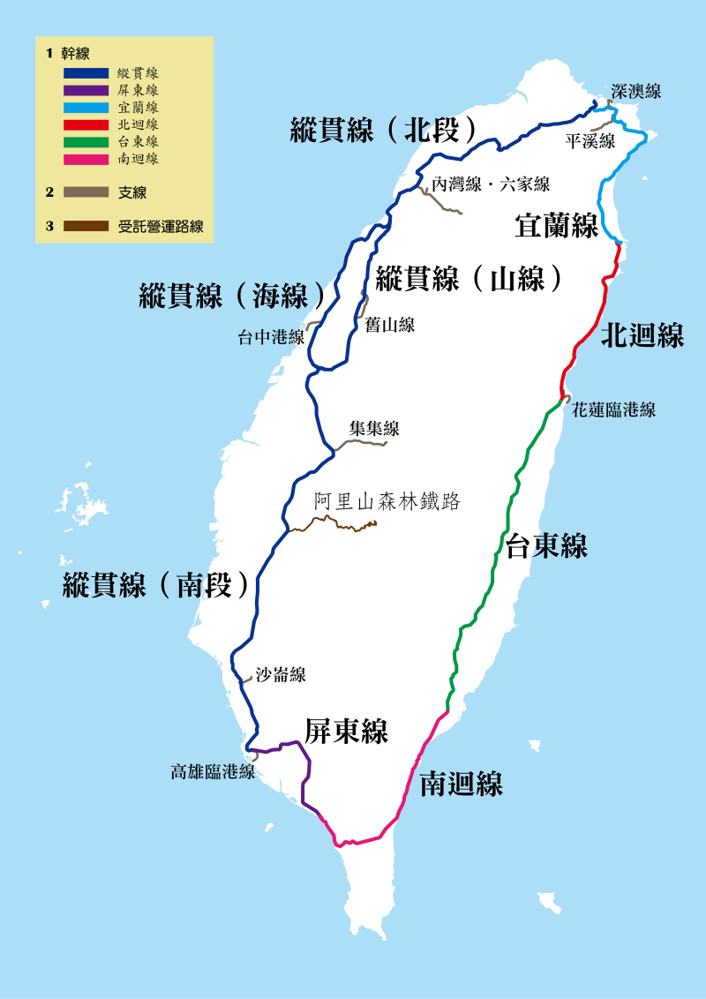
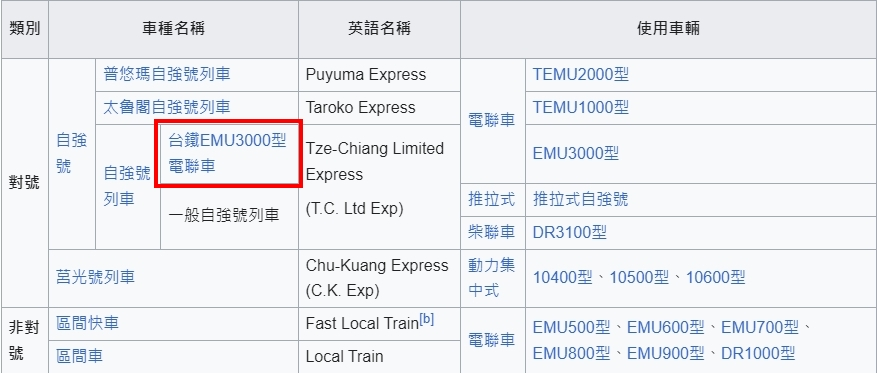

期末實作 學號:91135126 姓名:陳映諭
高雄鐵道種類
台鐵自強3000
台鐵介紹
以西部幹線、東部幹線、南迴線構成的環島鐵路網絡，為台鐵核心的營運路線，
其他路線則為運量較小的支線鐵路。至2020年底為止，台鐵的營運距離總數為1,065公里，
車站總數為241座（客貨運兼營73座、客運專營167座、貨運專營1座），
軌道總長度則為2,480公里。

台鐵EMU3000型電聯車
為台鐵繼1998年引進10組30輛DR3100型柴聯車之後，再度引進非傾斜式之城際列車，
也是目前台鐵採購數量最多之單一車型電聯車，預定2021年至2024年完成交車。
目前以「新自強號」之名編為自強號列車營運。
